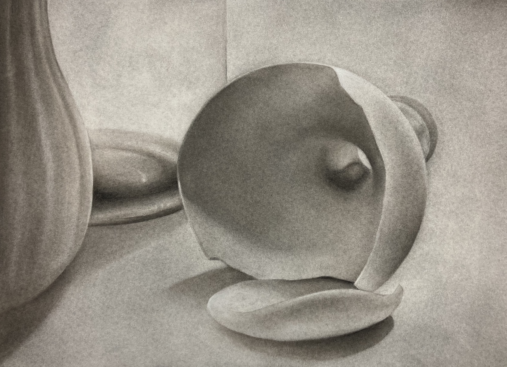
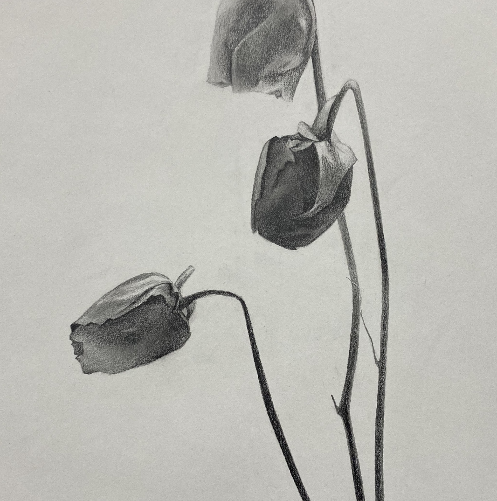
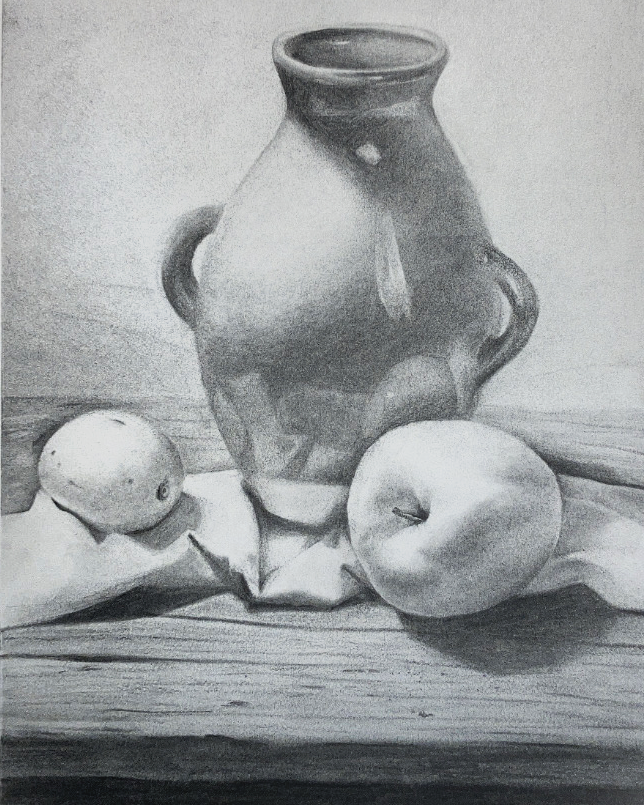
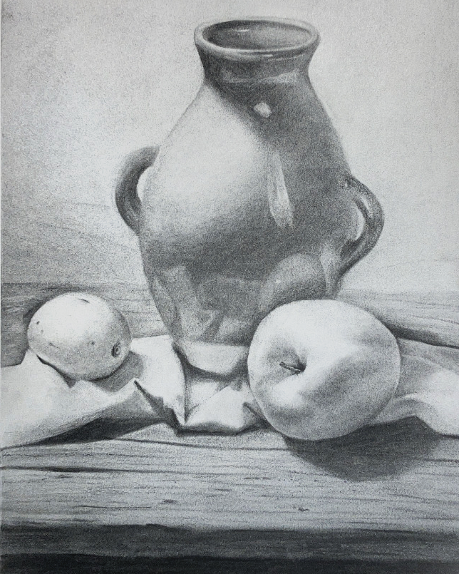

Studies: Still Lifes, Scientific Illustration, and Figure Studies
various dates & media



still life series
- 27 January 2022 | charcoal on paper, 18x24"
- 1 February 2022 | graphite on paper, 12x18"
- 3 February 2022 | charcoal on paper, 12x18"

 


- mini still life, 17 March 2022 | graphite on paper, 6x6"
- watermelon vase, 31 August 2021 | charcoal on newsprint, 18x24"
- lemon, apple, and vase, 2 September 2021 | charcoal on paper, 12x18"
- apple and glass, 2 September 2021 | charcoal on newsprint, 18x24"

scientific illustration, 28 September 2021 | ink on paper, 24x36"


figure studies, fall 2021 | charcoal on paper, 18x24"